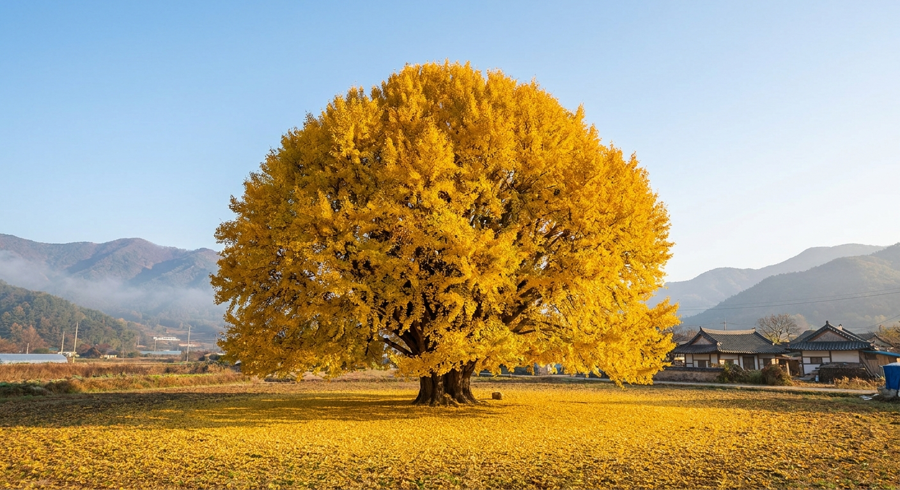
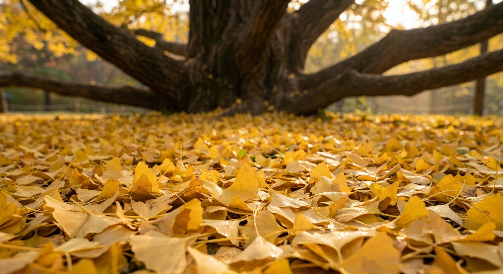
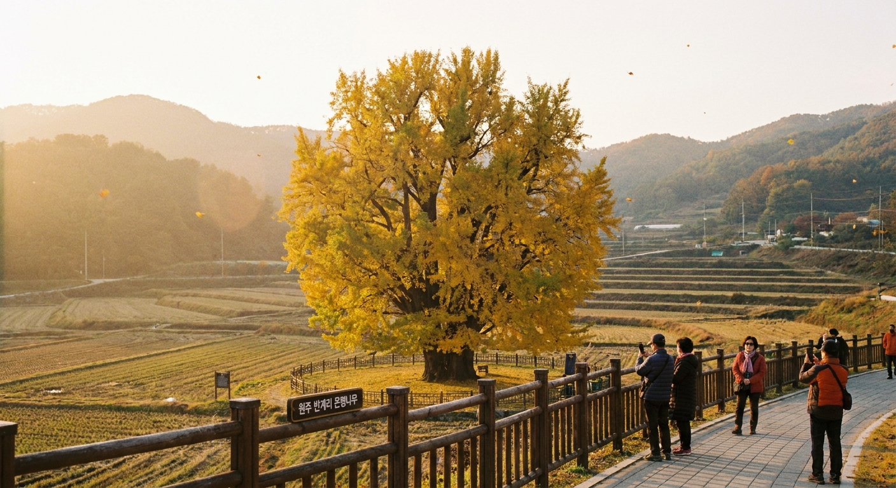

원주 반계리 은행나무 언제 절정인가 — 800년 보호수 노란 물결 단풍 시기와 전용 주차장 팁
강원도 원주시 문막읍 반계리에 자리한 은행나무는 수령 800년이 넘는 천연기념물 제167호로, 가을이면 거대한 돔 형태의 황금빛 수관을 뽐내며 전국적인 단풍 명소로 꼽힙니다.
2026년 반계리 은행나무의 황금빛 절정 시기는 10월 28일경부터 11월 4일 무렵까지 이어질 전망이며, 11월 초순에는 바람에 날리는 잎들이 바닥에 황금 양탄자를 깔아놓은 듯한 절경을 연출합니다.
올해는 은행나무 광장 정비와 함께 전용 주차장이 확장되어 접근성이 대폭 개선되었으나, 주말 정오 무렵에는 진입로 정체가 심하므로 오전 8시~9시 사이 이른 아침 방문을 추천합니다.

800년 역사를 품은 원주 문막 반계리 은행나무의 웅장한 황금빛 수관 / AI 제작 이미지
01 | 천연기념물 제167호 반계리 은행나무의 웅장함과 유래
강원특별자치도 원주시 문막읍 반계리 1495-1번지에 위치한 이 은행나무는 1964년 천연기념물로 지정된 우리나라 대표 노거수입니다.
나무의 높이는 약 32미터, 가슴높이 둘레는 16미터에 달하며, 동서남북으로 사방 균형 있게 뻗은 가지의 너비만 해도 30미터를 훌쩍 넘습니다. 마치 거대한 황금 돔이나 버섯을 엎어놓은 듯한 완벽한 반구형 수형이 특징입니다.
전설에 따르면 옛날 이 마을에 살던 성주 이씨 가문의 선조가 길을 지나다 지팡이를 꽂아놓은 것이 자라나 거목이 되었다고 전해지며, 또 다른 이야기로는 나무 속에 백사가 살고 있어 신성시되어 벌목되지 않고 오랜 세월을 지켜왔다고 합니다.
02 | 2026년 가을 반계리 은행나무 단풍 절정 예측 시기
올해 가을은 9월 말까지 이어진 늦더위와 일교차 영향으로 전국의 단풍 시작이 평년 대비 2~3일가량 늦어지고 있습니다.
반계리 은행나무는 일반적으로 주변 산림 단풍보다 조금 늦게 황금색으로 물들기 시작하며, 10월 중순까지는 푸른빛과 연두색이 섞여 있다가 10월 20일을 기점으로 급격히 노란빛으로 물듭니다.
가장 아름다운 '올 골드(All Gold)' 상태를 감상하시려면 10월 28일부터 11월 4일 사이를 공략하시는 것이 가장 확실합니다. 11월 첫 주말을 넘기면 서리와 찬바람으로 잎이 일제히 떨어지며 바닥 가득 노란 융단이 깔리게 됩니다.
| 시기 구분 |
날짜 범위 (예측) |
단풍 상태 및 관람 포인트 |
혼잡도 |
| 개화·물듦 초입 |
10월 18일 ~ 10월 24일 |
초록빛과 연노랑빛의 그러데이션, 비교적 한적한 산책 가능 |
보통 (주말 약간) |
| 절정기 (피크) |
10월 28일 ~ 11월 4일 |
수관 전체가 100% 샛노란 황금빛으로 물드는 최고의 사진 명기 |
매우 혼잡 (오전 추천) |
| 낙엽 융단기 |
11월 5일 ~ 11월 10일 |
바람에 흩날리는 은행잎 비와 바닥에 두껍게 쌓인 황금 양탄자 |
혼잡 (평일 방문 권장) |
03 | 방문 시간대별 채광과 인생 사진 건지는 포토존
반계리 은행나무는 사방이 탁 트인 평지에 우뚝 서 있어 해가 뜨고 질 때까지 일조량이 매우 풍부합니다.
하지만 사진 촬영과 호젓한 감상을 동시에 누리시려면 오전 8시 30분에서 10시 사이에 도착하시는 것을 적극 추천합니다. 이 시간대에는 나무 동쪽에서 비스듬히 쏟아지는 아침 역광이 은행잎을 투과해 보석처럼 반짝이는 입체감을 선사합니다.
오후 1시에서 3시 사이에는 머리 위에서 빛이 떨어져 색감이 다소 평면적으로 보일 수 있으며, 많은 인파로 인해 인물 사진 배경에 관람객이 걸리지 않게 찍기가 매우 어렵습니다.
💡 반계리 은행나무 3대 포토스팟 꿀팁
1. 보호 펜스 남동쪽 코너: 나뭇가지가 지면 가까이 낮게 드리워져 인물 뒤로 노란 배경이 빈틈없이 꽉 차는 최고의 인물 사진 명당입니다.
2. 광장 외곽 데크 쉼터: 나무 전체의 웅장한 32미터 돔 형태 수형을 왜곡 없이 한 앵글에 담을 수 있는 광각 화각 포인트입니다.
3. 진입로 은행잎 카펫 길: 바람에 떨어진 은행잎이 발목까지 덮이는 11월 초, 바닥 앵글 로우샷으로 촬영하면 감성적인 가을 스냅을 연출할 수 있습니다.

바람에 날려 지면을 황금빛으로 가득 채운 반계리 은행나무 낙엽 융단 / AI 제작 이미지
04 | 주차장 이용 안내와 진입로 혼잡 회피 전략
과거 반계리 은행나무는 마을 안길 좁은 농로로 진입해야 해서 차량 교행 불가와 극심한 주차난으로 악명이 높았습니다.
원주시는 이를 해결하기 위해 '반계리 은행나무 광장 조성 사업'을 추진하여 대규모 전용 주차장과 보행로를 확충했습니다.
전용 주차장은 무료 개방되며 일반 승용차 수백 대를 수용할 수 있는 규모입니다. 축제 기간 및 단풍 피크 주말에는 모범운전자회와 지자체 안내요원이 배치되어 일방통행 통제를 진행합니다.
🚗 반계리 은행나무 당일 주차 동선 가이드
1. 내비게이션 설정: '반계리 은행나무 전용주차장' 또는 '강원도 원주시 문막읍 반계리 1495-1' 입력
2. 문막IC 진출 후 접근: 영동고속도로 문막IC에서 나와 42번 국도를 타고 여주·원주 방향으로 약 10분 소요
3. 일방통행 준수: 피크 주말에는 마을 안길 진입이 통제되므로 안내 표지판을 따라 우회 진입로로 서행
4. 만차 시 대안: 전용주차장이 만차일 경우 안내요원의 지시에 따라 반계보건진료소 인근 임시 주차장이나 문막체육공원 주차 후 도보 또는 셔틀 이용
05 | 클릭 설계 체크리스트: 방문 전 필수 점검 항목
반계리 은행나무 방문을 계획하고 계신다면 출발 전 아래 체크리스트를 통해 완벽한 가을 나들이를 준비해 보세요.
| 점검 항목 |
세부 내용 및 주의사항 |
확인 여부 |
| 출발 시간대 |
수도권 기준 오전 7시 전후 출발, 현장 오전 8시 30분 도착 목표 권장 |
필수 점검 |
| 복장 및 신발 |
은행나무 주변 흙길 및 잔디밭 보행을 위한 편안한 운동화, 아침 방한 외투 |
권장 사항 |
| 문화재 보호 수칙 |
천연기념물 보호 펜스 월담 금지, 가지 흔들기 및 무속 행위 일체 엄금 |
절대 준수 |
| 화장실 위치 |
신설 전용주차장 내 현대식 공중화장실 마련 (마을 내 편의시설 부족 대비) |
확인 완료 |
| 실시간 현황 확인 |
원주시청 홈페이지 관광 공지사항 또는 SNS 실시간 태그(#반계리은행나무) 검색 |
출발 당일 확인 |
06 | 현장 관람 시 주의사항과 천연기념물 에티켓
반계리 은행나무는 오랜 세월을 살아온 소중한 자연유산인 만큼 관람객 개개인의 세심한 배려가 필요합니다.
나무 주변에는 뿌리를 보호하고 답압(밟아서 토양이 다져지는 현상)을 막기 위해 울타리가 설치되어 있습니다. 더 가까이서 사진을 찍겠다는 이유로 울타리를 넘어가거나 뿌리 부근을 밟는 행위는 나무 건강에 치명적이므로 절대 삼가야 합니다.
또한 은행 열매가 떨어져 냄새가 날 수 있으므로 신발 바닥을 털 수 있는 물티슈를 챙기시면 차량 탑승 시 유용합니다. 드론 촬영의 경우 문화재 인근 비행 승인 및 현장 통제 요원의 안내를 반드시 따라야 합니다.

노란 은행나무를 배경으로 정비된 산책로를 여유롭게 거니는 가을 나들이 풍경 / AI 제작 이미지
07 | 원주 당일치기 가을 드라이브 연계 코스 비교
반계리 은행나무 관람 소요 시간은 사진 촬영을 포함해 약 40분에서 1시간 안팎입니다. 원주까지 오신 김에 가을의 정취를 더 깊게 느낄 수 있는 당일치기 연계 코스를 취향에 맞춰 선택해 보세요.
| 추천 코스 |
경유 명소 동선 |
소요 시간 및 특징 |
추천 대상 |
| 자연·스릴 코스 |
반계리 은행나무 → 간현관광지 소금산 그랜드밸리(출렁다리·울렁다리) → 문막 맛집 |
총 4~5시간 / 아찔한 절벽 암벽길과 단풍 계곡 절경 |
활동적인 연인·가족 나들이 |
| 사색·예술 코스 |
반계리 은행나무 → 뮤지엄 산(Museum SAN) → 오크밸리 조각공원 |
총 4~6시간 / 안도 다다오 건축과 자작나무 숲, 물과 단풍의 조화 |
미술·건축 애호가, 힐링 여행 |
| 전통·사찰 코스 |
반계리 은행나무 → 치악산 구룡사 전나무숲길 → 원주 중앙시장 미로예술시장 |
총 5~6시간 / 치악산 오색 단풍 트레킹과 전통시장 손칼국수 투어 |
부모님 동반, 전통 미식 여행 |
08 | 문막 주변 가을 먹거리와 현지 맛집 안내
문막읍과 반계리 인근에는 원주를 대표하는 향토 미식들이 즐비합니다. 쌀쌀한 가을바람을 쐬고 난 뒤 몸을 따뜻하게 녹여줄 한 끼 식사로 안성맞춤입니다.
문막 일대는 섬강 맑은 물에서 자란 민물고기로 끓여낸 어탕국수와 민물매운탕이 유명합니다. 칼칼하면서도 깊은 국물에 수제비와 국수를 말아 먹으면 가을 보양식으로 손색이 없습니다.
또한 원주 시내 방면으로 이동하시면 원주 치악산 한우 구이나 곤드레나물밥, 강원도 토속 감자옹심이를 전문으로 하는 식당들이 많아 1만 원 안팎에서 든든하고 담백한 식사를 즐기실 수 있습니다.
09 | 방문객 질문 빈도 높은 핵심 FAQ
Q1. 반계리 은행나무 입장료가 있나요?
A1. 입장료와 주차료 모두 전액 무료입니다. 상시 개방되어 있어 언제든 자유롭게 둘러보실 수 있습니다.
Q2. 반려견 동반 입장이 가능한가요?
A2. 네, 목줄 착용 및 배변 봉투 지참 시 반려견 동반 산책이 가능합니다. 다만 인파가 붐비는 시간대에는 안전사고 예방을 위해 각별한 주의가 필요합니다.
Q3. 대중교통으로 갈 수 있나요?
A3. 원주 시외버스터미널이나 원주역에서 문막 방면 시내버스(51번, 55번 등)를 타고 문막읍내에서 하차한 뒤 마을버스나 택시(약 10분, 7천~8천 원 내외)를 이용하셔야 하므로 자차 방문이 훨씬 편리합니다.
#원주반계리은행나무
#반계리은행나무절정시기
#원주가을여행
#원주단풍명소
#반계리은행나무주차장
#천연기념물은행나무
#강원도가을드라이브
#소금산출렁다리연계
#문막가볼만한곳
#가을인생샷명소